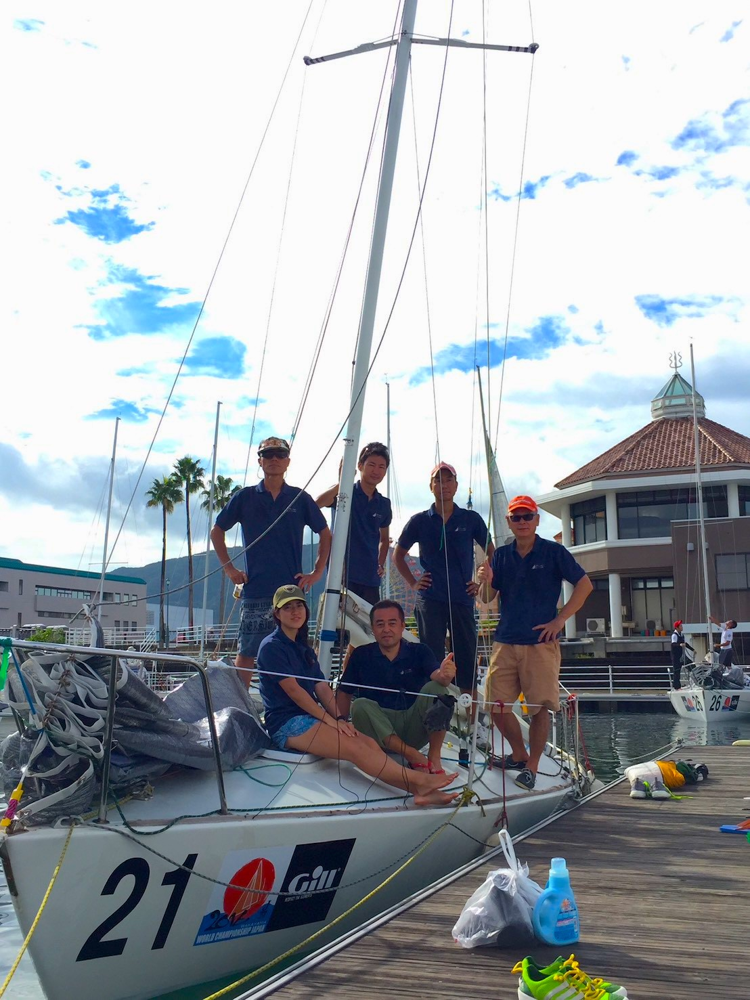
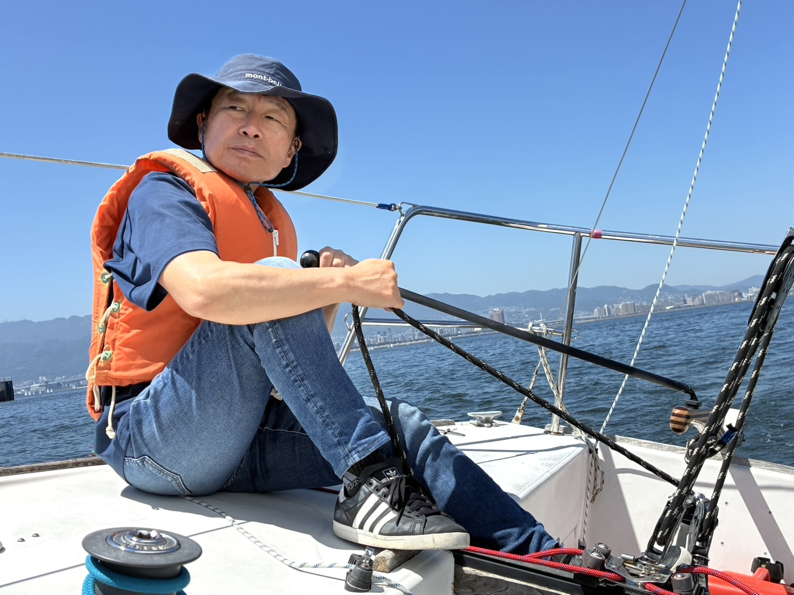
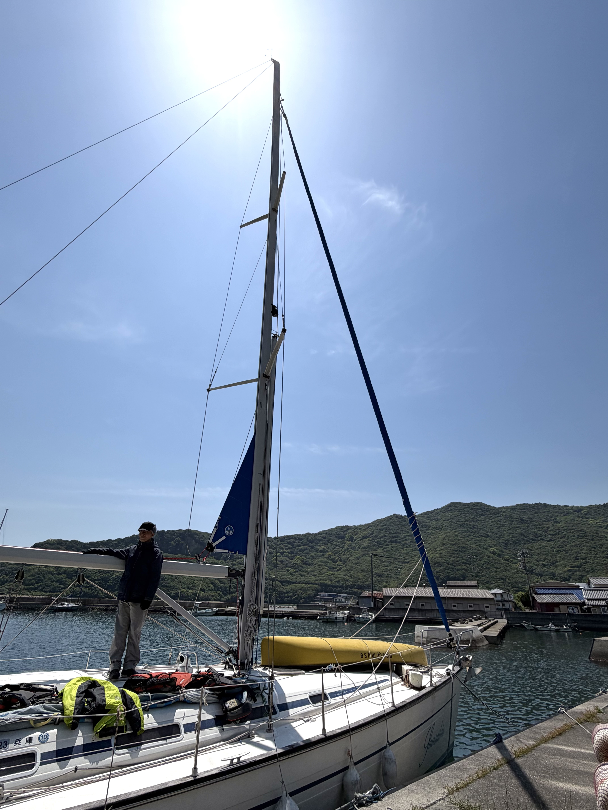
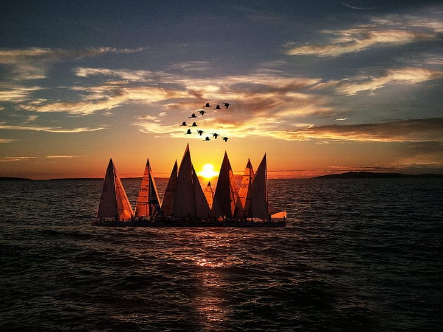

クラブの
活動内容と、歴史。
西宮港周辺で40年以上、変わらず続いてきた日曜日のヨット時間。
私たちが何を、どんなふうに大切にしてきたかを、お伝えします。
1984年、
ひとつのヨットから。
サウサリートヨットクラブは、1984年、西宮港でいくつかの艇を持ち寄った仲間によって発足しました。
名前の由来は、サンフランシスコ湾の小さな港町・サウサリート。
競い合うのではなく、海そのものを楽しむ。設立から40年以上、私たちはその姿勢を変えていません。
時代が変わり、メンバーが入れ替わっても、毎週日曜に港に集まる習慣だけは続いてきました。
初心者として入った人がベテランになり、ブランクを経て戻ってくる人がいて、また新しい人が訪ねてくる。
ヨットクラブというよりも、海辺の「日曜日の集まり」と言ったほうが、私たちには近い気がします。

40年の歩み。
クラブ発足
西宮港を拠点に、有志の仲間が集まりサウサリートヨットクラブが誕生。クルージング中心の活動方針を最初から掲げる。
日曜活動の定着
毎週日曜10時集合、午後までのショートクルージングが定着。メンバー数も次第に増え、初心者向けの体験会も始める。
ロングクルージングの開始
春・秋を中心に、瀬戸内海方面への2〜3日間クルージングを実施。家島・小豆島・淡路島など、季節ごとに目的地を変える。
世代交代と継続
創立メンバーから次世代へ。一方で、ブランクを経て戻ってくる「再開メンバー」も増え、世代の幅が広がる。
40年目の日曜日
誰でも気軽に立ち寄れる、海辺の集まりとして。無料体験を通じて、初めての方を迎え続けています。
活動内容
レースではなく、クルージング。私たちの日曜は、3つのかたちで続いています。

毎週日曜の
ショートクルージング
西宮港周辺を、午前から午後まで帆走するのが基本の活動です。10時頃に港へ集まり、その日の風と相談しながらコースを決め、14時頃に戻ってくる。
帰港後はメンバーで艇の片付けをして、しばし陸の時間を共有してから解散——それが、私たちのいつもの日曜です。
活動時間: 10:00 – 14:00 / 西宮港周辺

クルージング中心の、
心地よい時間。
私たちはレースクラブではありません。「速さ」や「順位」を追わないので、誰かと比べる必要がなく、できることをそのまま楽しめます。
帆を上げ、風に船を任せ、海の上にいるだけ。それだけのことが、こんなに豊かなんだと、毎週思い返しています。
だからこそ、ブランクのある経験者の方にも、まだ何もできない初心者の方にも、無理なく合流していただけます。

年に数回の、
数日間クルージング。
春と秋を中心に、年に数回、2〜3日かけてのロングクルージングを行います。瀬戸内の島々を巡り、夕暮れの停泊地で食事を分け合う——日常から少し離れる、特別な時間です。
参加は自由。日帰り活動だけのメンバーも、もちろん歓迎しています。
費用: 食事代等の実費のみ